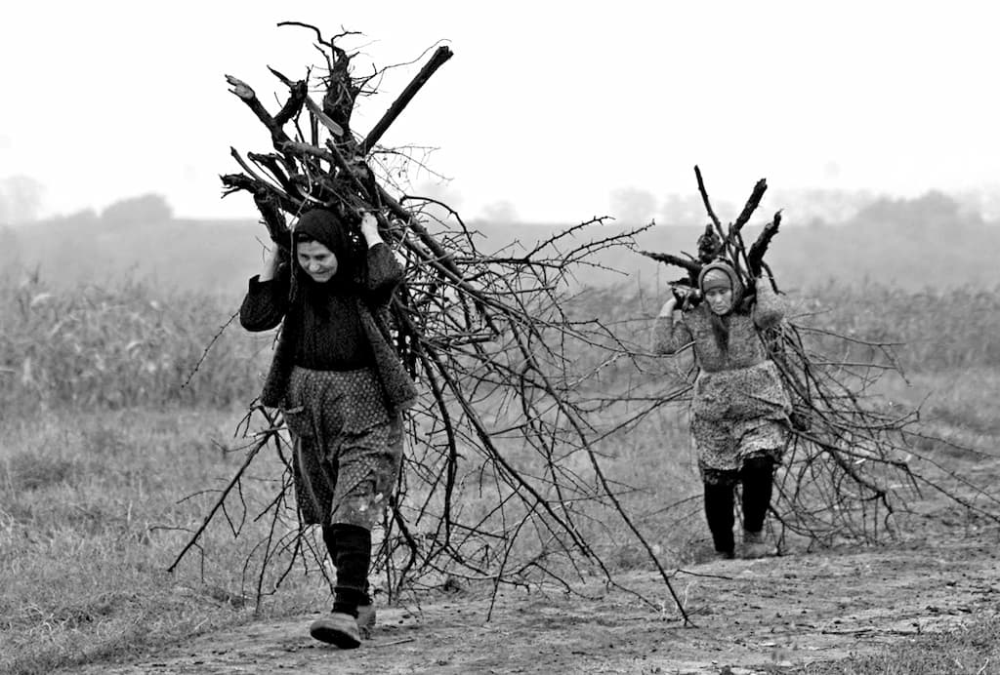

Se tot vorbește, de ani buni, despre soarta țăranului român – care în ultima perioadă, pare definitiv stabilită. Cele mai multe voci sunt de părere că, de fapt, țăranul român nici nu mai există, că el ar fi dispărut de mult timp și că ceea ce vedem noi astăzi – cetățenii de la țară – nu sunt decât niște urmași scăpătați ai unei civilizații țărănești apuse. Se mai spune că avem noroc și că trebuie să ne bucurăm, pentru că iată a apărut un nou tip de trăitor la țară care înțelege ce înseamnă randamentul și producția și care se numește fermier sau agrofermier. Tot ca o veste de necontestat apare și vorba după care acesta ar fi un stadiu superior în evoluția țăranului universal (unde desigur avem reprezentanții noștri), lucru de care, din nou, trebuie să ne bucurăm. Toate acestea și multe altele se spun cu înțelegere, cunoaștere și fermitate – ceea ce ar trebui să ne arate că tocmai aceasta este realitatea – firește, științific vorbind. Să le luăm pe rând.
De un secol și jumătate vedem problema țăranului și a satului românesc cu totul greșit. Pentru cei care conduc – și, prin propagandă, pentru cei mai mulți dintre români, dacă nu cumva pentru toți – problema țăranului și a satului este fie una de mentalitate, fie una economică („mentalitatea țăranului a fost depășită”, ea „ar trebui schimbată” etc). Țăranul român este „pe cale de dispariție” – dacă nu cumva „a și dispărut”! – fiindcă nu are „randament” la hectar sau la litru sau la kilogram. El este și prea puțin culturalizat să poată înțelege ceea ce i se petrece (sau „cum merge lumea”) și, pe deasupra, are o îndărătnicie care te pune în dificultate, dacă vrei să îl salvezi – s-a stabilit de către toate regimurile politice, fără excepție, de 150 de ani încoace că „e foarte greu, dacă nu imposibil, să-i schimbi mentalitatea omului de la țară”. Așadar țăranul a fost și este de vreo sută cincizeci de ani considerat „înapoiat”, așezat de multe ori – chiar în discursurile academice – în rândul necuvântătoarelor. Mai pe scurt: satul românesc „a căzut în sărăcie”, și, ca urmare, problema este una economică; cu alte cuvinte practicând modul de viață pe care îl practica tradițional, țăranul a sărăcit și satul s-a prăbușit. Fiind necivilizat și având o anumită mentalitate, nu-l mai poate „salva” nimeni. Fiindcă el – țăranul – nu a înțeles că trebuie să se schimbe cu totul, că nu mai are importanță ceea ce odată era esențial, că Dumnezeu poate că există, poate că nu există – după cum crede omul – că pământul trebuie cultivat științific (ca să obții mai multe kilograme), că găinilor trebuie să li să impună – dacă nu înțeleg de vorbă bună – să facă mai multe ouă, vacilor mai mult lapte, porcilor mai multă carne șamd.
Operațiunea de „salvare” a țăranului român și a satului românesc nu a reușit nici cu reforma agrară, nu a reușit nici cu colectivizarea comuniștilor. Acum se încearcă din nou „salvarea” țăranilor prin transformarea lor în… fermieri ( și, probabil transformarea gospodăriilor în ferme). E sigur: n-are cum! Fiindcă problema țăranului nu este cea pe care au legiferat-o străinii – chiar dacă au făcut lucrul acesta la Paris, la Viena sau la Moscova sau, mai nou, la Bruxelles; sau tocmai de aceea – nici cea pe care au pus-o la baza acțiunilor lor, comuniștii (de altfel, la fel de frați de „credință întru necredință” cu cei dinaintea lor ca și cu cei care le-au urmat). Problema țăranului este o alta. Și atâta timp cât nu se pune problema corect, rezultatul nu poate fi unul corect. Pe de altă parte trebuie spus răspicat că pentru noi, pentru români această problemă este crucială.
Țărănia nu este o meserie. A fi țăran este un mod de existență propriu-zis, în care fiecare îndeletnicire își are rostul ei. Țăranul nu este și nu poate fi tot una cu fermierul, fiindcă gospodăria țărănească nu are a face cu ferma.
Problema țăranului nu a fost și nu este tot una cu problema agriculturii sau cu cea a zootehniei, fiindcă el nu face agricultură și nici zootehnie. Agricultură și zootehnie face statul, sau colectiva, etc.
Anormalitatea vine din faptul că statul „modern și revoluționar” nu a fost de la începuturile lui precum nu este nici astăzi, interesat în mod real de problema fundamentală a țăranului român; ci de o clasă socială care…, sau de o clasă profesională care…; or, țăranii nu formează o clasă socială și nici profesională, tot așa cum nu fac parte din societate, decât în măsura în care societatea are structură organică. Adică în măsura în care societatea s-a dezvoltat în mod firesc din comunitatea care exista – nu și dacă s-a inventat sau s-a copiat o formă de existență care este cu totul străină de felul de a fi al comunității și care gândește să reorganizeze în mod artificial și coercitiv viața membrilor comunității. De exemplu, legea după care se trăiește astăzi în România este una cu totul străină – și așa a fost de la începutul sfârșitului nostru ce poartă pecetea anului 1848. De la primele „reforme” ale statului „modern” român, care nu făceau altceva decât să deformeze sensul existențial al românilor ca popor – sau altfel spus să impună cu forța un fel de viață cu totul străin și nepotrivit pentru români – și până la reformele și mai moderne și mai alienante care ni se impun astăzi tot cu forța (prin mijlocirea unor conducători care au aceiași sorginte atât cu pașoptiștii cât și cu comuniștii), viața poporului român este un lung șir de spasme existențiale. Prima lege a statului modern român, respectiv Constituția din 1866 a fost pur și simplu traducerea Constituției Belgiei, multe din articolele din această (pe deasupra și foarte prost tradusă) constituție nu au nici un punct comun cu românii – adică se referă la niște oameni care nu au nici obiceiurile, nici îndeletnicirile, nici scopurile și nici aspirațiile românilor, care au alte valori. E vorba de impunerea prin minciună și prin forță a unui mod de viață cu totul străin de cel propriu nouă. De aici decurge că e firesc ca după câteva generații să trăim debilitatea noastră ca popor.
Așadar, problema țăranului român este tot una cu problema poporului român.
Este foarte interesant de observat ce au în comun formele de organizare statală despre care vorbim. Fiindcă se poate observa că este vorba despre o coerență în actul conducerii, chiar dacă vorbim și despre monarhie și despre republică; chiar dacă vorbim și despre conservatori și despre liberali și despre țărăniști și despre comuniști și despre social democrați; chiar dacă vorbim și despre influența franceză și despre influența uniunii sovietice și despre influența uniunii europene. Ce au în comun pașoptiștii cu unioniștii cu oamenii politicilor democratice de partid cu comuniștii cu europenii și cu actualii guvernanți (sau mai bine zis conducători)?
În primul rând necunoașterea sau nerecunoașterea trăsăturilor ontologice proprii românilor, ceea ce a dus la ceea ce am afirmat mai sus: cu toții au încercat să creeze un stat structural străin de poporul român. Cum am spune, au încercat să facă dintr-un cais un șoarece de câmp… Pe unde și-au făcut școlile – fiecare la timpul său: primii la Paris și la Viena, apoi la Moscova și la Leningrad, iar acum la Bruxelles și în America – au învățat cu toții că nu contează cum este un popor pe care vrei să-l conduci, că nu contează dacă acel popor are sau nu o destinație istorică stabilită prin tocmai felul său de a fi; că nu există decât, cel mult, o destinație istorică, și în nici un caz o misiune mântuitoare; mai pe scurt, că există două categorii sociale:
1) cei care conduc așa cum se gândesc ei cu mințile lor (sau, mai corect spus, cum gândesc alții pentru ei) fără ca regulile după care conduc să aibă nici cea mai mică legătură cu destinul și misiunea celor pe care îi conduc și
2) cei care sunt conduși, adică massele despre care se știe că, în istorie, n-au avut voință și că nu au criterii de selecție, și tocmai de aceea se numesc „de manevră”.
Mai apoi, trebuie observat că un alt punct comun – esențial pentru explicarea și înțelegerea întregului fenomen – este poziția pe care au avut-o, rând pe rând, guvernanții României „moderne” față de dreapta-credință a românilor în Hristos. Această poziționare justifică formal întreg efortul – de a crea statul organizat administrativ într-un fel sau altul, de a controla și dirija cultura, de a face un tip sau altul de economie, șamd. Toate acestea tocmai pentru ca, în final, rezultatul să fie cel care este așteptat și astăzi: descreștinarea poporului român, ruperea legăturilor pe care le avea – și pe care, deși din ce în ce mai firav, le mai are – cu Hristos, Mântuitorul nostru. Acest lucru este echivalent, în planurile lor, cu alienarea poporului român – și aici ei nu se înșeală! –, cu dispariția românilor din istorie ca popor, cu transformarea unui popor mărturisitor și iubitor de mântuire, într-o populație fără Dumnezeu. Lupta lor are 150 de ani. Efortul lor nu e mic – nu e nici cum pretind ei când spun că se căznesc de două mii de ani!
Iată cel mai important punct comun al celor care au condus și mai conduc lumea românească modernă, timp de mai bine de un secol jumătate. Nu a contat dacă au fost revoluționari, sau monarhiști, sau republicani; dacă au fost conservatori sau liberali sau comuniști sau social democrați: toți, fără excepție, au fost atei – mai exact anticreștini –, promotori ai ateismului sub diferitele sale forme de manifestare (drepturile omului, ale conștiinței, evoluționism, indiferentism religios șcl) – în cel mai bun caz. Toți, fără excepție, au tratat credința ortodoxă a poporului român ca pe un „rău” împotriva căruia trebuie luptat cu prudență, dacă nu poate fi eradicat. „Rău” împotriva căruia au și luptat prin crearea a diferite forme de guvernare, inventând și experimentând în toate direcțiile și în primul rând în actul legislației. Astfel, în acest moment în România, legislația țării – integral! – este o legislație anticreștină; spiritul și litera legilor aparțin necreștinilor și sunt îndreptate împotriva creștinismului – acest lucru ar trebui dezbătut și tratat cu seriozitate maximă.
Toți au folosit credința creștin ortodoxă a românilor în scopuri electoral-exhibiționiste, maimuțărind-o în acest fel.
Cum altfel i-am fi putut vedea pe Mihail Kogălniceanu, pe Rosetti, pe Brătieni, pe regii „noștri”, …, pe Ion Iliescu sau pe Traian Băsescu schimonosind și batjocorind crucea (pot fi numiți toți conducătorii României „moderne” – noi am ales doar câteva nume pentru exemplificare).
Toți au atacat credința ortodoxă, lovind în diferite moduri în Biserica lui Hristos: revoluționarii lumii moderne (denumiți și pașoptiști și cinstiți cu mare evlavie, prin propaganda desfășurată în învățământul românesc) aveau același ideal cu cei care i-au crescut și instruit în Franța: „cu mațele ultimului popă, să spânzurăm ultimul rege”; unul dintre cei mai mari dușmani ai creștinismului și prigonitor al monahismului a fost Alexandru Ioan Cuza care este considerat de către istoricii lumii moderne și împreună cu ei de către toată lumea românească, cel puțin un erou dacă nu un sfânt (după cum puteți citi și la paginile 17, 18 și 19); unul dintre cei mai mari dărâmători de biserici ortodoxe a fost nimeni altul decât regele Carol I – este perioada în care regele catolic (care a trecut la credința poporului din motive profesionale) a dărâmat nenumărate biserici și a transformat și mai multe mănăstiri în ospicii de nebuni și în pușcării (lucrurile acestea le poate verifica oricine este interesat într-adevăr de această problemă); mai departe: întreaga clasă politică antebelică – noua formă de conducere a statului generată de revoluția franceză – s-a născut din și a aparținut diferitelor loji iudeo francmasonice, ale căror idealuri anticreștine ne fac să ne explicăm multe din „erorile” politice teritoriale ale vremii și mai ales ne ajută să înțelegem transformarea statului român într-un stat anticreștin cu un randament remarcabil; despre comunism – sub influență sovietică sau autohton – nu trebuie să spunem lucruri puține, ca și cum ele s-ar cunoaște; fiindcă realitatea este că, deși au trecut doar douăzeci de ani de când comunismul și-a schimbat numele și uneltele de lucru, lumea a uitat. Așadar, comunismul a considerat, din pornire, credința în Hristos ca pe o boală mintală, ca pe un drog („opiu popoarelor”- Lenin); pe de altă parte, relația statului comunist cu Biserica era considerată ca necesară, pentru a o putea controla. De altfel aceasta este perioada în care s-au continuat infiltrările în interiorul clerului, dar care poate fi menționată ca importantă mai ales pentru schimbările pe care comuniștii le-au reușit atât în slujirea Sfintelor Taine cât și în textele sfinte – au fost schimbate cuvinte din Noul Testament, deturnate sensuri etc. Iată de ce Axa atrage atenția ierarhiei – desigur, cu fiiască supunere –, cu fiecare prilej, că aceste aberații ar trebui îndreptate devreme ce încă funcționează și produc efecte smintitoare pentru mântuirea poporului drept-credincios (care în condițiile date nici nu mai prea poate să fie și drept și credincios). Și din același motiv, aceeași Axă, se întreabă cine este Sinodul BOR, dacă nu se înlătură demențele îndreptate de către conducătorii anticreștini împotriva Bisericii lui Hristos, nici de ierarhie.
La fel au lovit în Biserică, și, prin acesta, în credința noastră, denaturând învățământul teologic, (e foarte greu de crezut, dar adevărat, faptul că școlile teologice ortodoxe de la noi din țară – indiferent de gradul de învățământ – sunt profund catolicizate și catolicizante, susținătoare ale curentului ecumenist distrugător al credinței ortodoxe); infiltrând clerul, îmbolnăvind ierarhia într-o mare măsură (au fost și sunt ierarhi care aparțin organizațiilor secrete anticreștine sau care slujesc intereselor politice antiromânești) – și în felul acesta putând să discrediteze chiar credința în Hristos, prin discreditarea preoților lui Hristos.
Faptul că mai existăm ca popor poate fi explicat prin mare Mila Domnului, care ne-a dat în momentele de cumpănă pentru ierarhia Bisericii fie și doar un singur ierarh care să țină cumpăna dreaptă și vasul credinței nevărsat – e cazul Episcopului Gherasim Safirin, care împotriva unui sinod mincinos, a apărat dreapta credință (cu mai puțin de 100 de ani în urmă) și a înțeles să plătească pentru aceasta.

Un alt lucru, pe care conducătorii României „moderne” – respectiv antiromânești – l-au avut și îl au în comun, este apropierea tehnică, lascivă și morbidă de tot ce este străin, precum și ura împotriva tuturor celor care au afirmat că poporul român trebuie să trăiască într-un stat românesc în care întreaga viață trebuie să aibă ca finalitate mântuirea noastră ca neam și a fiecăruia dintre noi, în Iisus Hristos, Fiul lui Dumnezeu, mărturisit în Crez. Având toate instrumentele pentru a desfășura un adevărat carnaval propagandistic – bazat pe strategii de coerență, pe modele de mentalitate, etc – acțiunile lor dau randament. Massele acceptă, fără să conștientizeze, clișeele care poartă aceste mesaje. Ele au devenit, pur și simplu, adevăruri date. Așa se face că cetățenii europeni vorbitori de limbă română – care suntem noi astăzi – omagiază acte „istorice” și proslăvesc „personalități” care au luptat cu toată puterea lor împotriva lui Hristos și a neamului românesc. Pe de altă parte aceiași cetățeni urăsc și veștejesc pe cei care au murit pentru Hristos și pentru neam. Cultural, aceasta înseamnă răsturnarea valorilor, patologic înseamnă oligofrenie, ființial debilitate, iar fundamental înseamnă pierderea mântuirii și cazanul de smoală. Este impresionant ce poate să facă un aparat de propagandă pus la punct și reglat tehnic cum trebuie. Totodată este impresionant ce i se poate întâmpla unui popor care cade pradă puterii de imaginație a minții și care este pe cale de a-L pierde pe Hristos.
Iată de ce este interesant țăranul român. Fiindcă el este purtătorul destinului poporului român; fiindcă la el a ajuns mai greu ciuma anticreștină și pentru că el n-a primit-o sau a primit-o mai greu. Mai există sau nu mai există țăranul român? Sau satul românesc este doar subiect de studiu? Există o „soluție” pentru a rezolva această problemă sau totul este pierdut, depășit, revolut și „evoluat”? Care este acea „soluție”?
Ceea ce este în afară de orice întrebare, este că soluția stă în reapropierea poporului de existența firească proprie lui, în reapropierea de Hristos. Sigur este, de asemenea, că instrumentul prin care se poate face aceasta la nivelul întregului popor, adică la nivelul statului în întregimea lui, este actul conducerii acestui stat. Conducerea, guvernarea statului român trebuie încreștinată, cu alte cuvinte actul guvernării trebuie să se bazeze pe legătura organică cu felul de a fi creștin al poporului român. Trebuie întreruptă politica anticreștină care stă la baza statului român; trebuie oprit șirul conducătorilor și politicilor anticreștini – șir care ne duce la ruptura de Hristos; trebuie distrus, prin orice metode, aparatul de propagare a pierzaniei noastre ca popor – aparat care nu este altceva decât instrumentul de manipulare a sufletelor și gândurilor noastre și care a fost construit și folosit de acești oameni politici. Dacă se poate acest lucru? Istoria ne învață că da. Iar propaganda puterii – cea care a împlinit 150 de ani de luptă neîntreruptă împotriva lui Hristos și a neamului românesc – se străduiește să ne convingă că nu și că nici nu este necesar, ba chiar că ar fi terorist de contraindicat.
După Sfânta Liturghie, m-am oprit în fața bisericii din sat – o construcție veche cam de o sută de ani, cu un aspect oarecum îngrijit. Singurul lucru supărător, care îți sărea în ochi din primul moment era crucea mare de pe biserică, care era înclinată pe o parte. Am hotărât să aștept să iasă lumea din biserică și să întreb un bătrân sau o bătrână sau chiar pe părintele paroh dacă au băgat de seamă că crucea de pe biserică stă să cadă. Am intrat în vorbă cu o bătrână, care mi s-a părut mai ursuză și mai grăbită – așa poți obține răspunsul cel mai concis, fără prea multă bătaie de cap. După câteva cuvinte de început am întrebat-o dacă oamenii din sat sunt gospodari. „Sigur că sunt gospodari; n-ai văzut cum arată satu?” „Da, am mers mai departe eu, în curând cred că n-o să mai aveți cruce pe biserică. Sau aici, în sat, se folosește crucea strâmbă?” M-a privit în primul moment nedumerită. Eu i-am arătat crucea de pe biserică. Nu numai că nu s-a uitat, dar părea că nu înțelege ce-i spun. Înainte de a-i repeta – mă gândeam că nu are auzul prea bun – s-a dat un pas înapoi și a spus: „Sigur că avem cruce dreaptă. Cum altfel, decât dreaptă?” „Păi, unde e? Ia s-o văd!” m-am bucurat eu oarecum că am prins-o pe bătrână. Replica ei a venit definitiv, cu o hotărâre solemnă. Și-a pus cele trei degete strânse la frunte și și-a făcut semnul crucii: „Uite-o! E dreaptă și o am cu mine toată vremea!” Aceasta este una dintre replicile cele mai dure pe care le-am primit vreodată. A ridicat din sprâncene și a rostit rece: „Dumnezeu și Maica Domnului să te ajute!”, apoi a plecat.
Această poveste m-a făcut să cred că dacă, la marea și înfricoșata Judecată, v-a ajunge o singură „babă românească”, atunci noi, ca popor, suntem mântuiți. De atunci mă rog pentru ea.